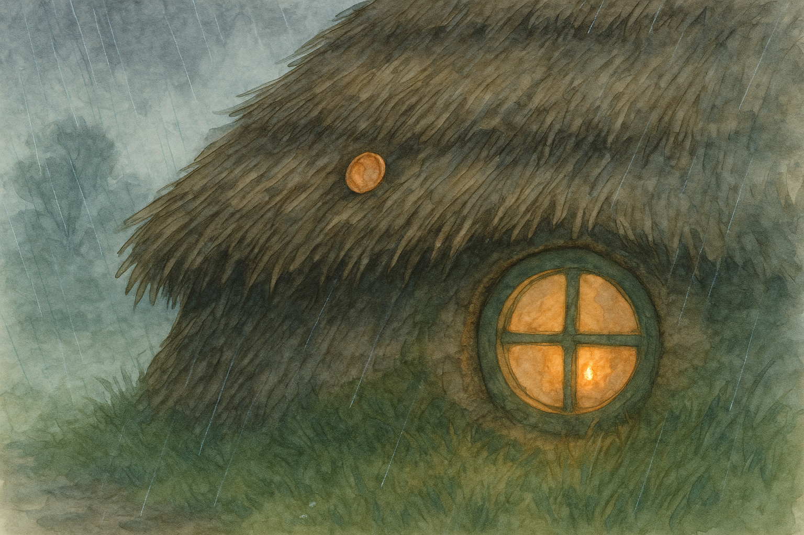

Fourth Age, in the Shire when spring rain makes the eaves sing and even good folk begin to count the drops.
There is a habit in the Shire of putting small things in unlikely places, and then calling it “only sensible.”
Buttons are stitched inside waistcoats in case one should take a notion to leap away; spare strings are tucked behind crockery; a crust of yesterday’s loaf is laid aside “for the birds,” though it is just as often for a hungry child who comes in from the lane looking too honest to admit it. Even the Hill has its hidden nooks: shelves behind false panels, jars behind jars, and that one drawer that will not open unless you speak to it kindly.
Roofs, too, have their secrets.
Now, a hobbit-hole roof is not built like a big-folk’s roof. It is a sort of living thing: turf on top, thatch at the edges, old straw and reed woven and packed until it seems half field, half home. When the rain comes it does not drum and rattle; it sighs, and slides, and makes soft little rivers that run down the eaves as if the house itself were thinking.
In one such roof—over a snug hole with a round green door and a porch that smelled of wet clay and rosemary—there was a copper coin.
It was not a grand coin. It was not a king’s bright piece stamped with a high brow and a stern nose. It was a little Shire copper, worn smooth at the edges, with the design nearly rubbed away by years of pockets and palms. If you held it to the light you could still make out the faintest hint of a sheaf of barley on one side, and on the other a star that looked as if it had been drawn by someone in a hurry.
It had been put there, tucked into the thatch just above the kitchen window, by old Odo Puddifoot on the day he finished mending the roof.
Odo had the sort of care that shows in the way a man closes a gate behind him. He did not slam it; he did not leave it swinging; he clicked it into place and gave it a little shake to make sure it meant what it said. When he mended a roof he mended it as if he expected weather to take it as a personal insult.
“That’s a queer place for money,” said his niece, Daisy, who stood below with a basket of reeds and a freckled nose tipped up toward him.
“It isn’t money once it’s there,” said Odo, without looking down. “It’s a promise.”
“A promise of what?”
Odo wedged the coin a little deeper with the blunt end of his thatching-knife. “A promise that the roof will keep. A promise that someone will come home.”
Daisy laughed, because young folk often do when an old one speaks like a song. “Roofs don’t promise,” she said.
Odo’s shoulders rose and fell, as if he had shrugged but the motion got caught in the thick of his coat. “They don’t speak either,” he said, “and yet you know when one is sulking.”
Daisy looked at the neat ridges of thatch, the way they lay like combed hair. “Why a coin?” she asked, more quietly.
Odo sat back on his heels and finally peered down at her, his eyes pale as old ale. “Because it is small enough to hide,” he said, “and heavy enough to mean it. And because copper listens.”
“Listens to what?”
“To rain,” said Odo. “And to longing. Those are much the same sound, if you hear them long enough.”
That was the sort of thing Odo said. Folk smiled and shook their heads, and went on with their baking.
But the rain came that spring as it had not come for years.
It came kindly at first: a soft patter that made the young shoots stand up straighter and put a gloss on the leaves. Then it came in earnest. It came in sheets, and in steady grey curtains, and in sly little mists that crept in under shawls. It came in the night and it came in the morning and it came at teatime as if it had been invited and had decided to stay for supper.
The Water ran high. The lanes turned to dark ribbons. Even the hedges began to smell like the bottom of a clean bucket.
Hobbits, being sensible, stayed in.
They played cards. They polished kettles that did not need it. They made lists of things they would do “when it clears,” and then made another list of things they might do if it did not.
Daisy, now older by a season and a little less inclined to laugh at songs, sat by the kitchen window most evenings and watched the rain slide down the glass in long, thoughtful trails. She listened to the eaves sing.
And sometimes—just sometimes—when the wind lifted and worried at the roof, she heard a tiny sound: a soft, bright ting, like the kiss of a spoon on a cup.
At first she thought it was the kettle, settling on the hob. Then she thought it was a drip. Then she thought it was only the house making its own noises, as houses do when they are full of people and weather.
But one evening the ting came again, and again, and it seemed to come not from the hearth but from above—just above the kitchen window, where the thatch hung in its neat brown fringe.
Daisy put down her needlework and went to the door.
Outside the rain smelled like wet earth and new grass. The porch steps were slick, and the light from the window made a small warm patch on the ground, no bigger than a tablecloth. Beyond that patch, the lane was a soft dark blur.
The wind pushed at Daisy’s hair. She tilted her head back and stared up at the eaves.
She could not see the coin, of course. It was tucked in like a secret. But the sound came again: ting. And with it came a strange feeling, as if the house itself had cleared its throat.
Then the smell of rain was joined by another smell: damp wool, and road-mud, and a faint whiff of smoke that was not her own.
Daisy’s heart gave a little jump, and she told herself sternly not to be foolish. The rain makes you imagine things. The rain makes you remember.
There was a shape on the lane.
Not a shadow; the light behind Daisy was too steady for that. Not a tree; it moved, haltingly, as if each step had to be agreed upon. A traveller, cloaked and bent against the weather, came toward the round green door as if it were the only certain thing left in the world.
Daisy did not call out. Some folk do—big-folk, mostly, who think the world is answered by shouting. Daisy simply opened the door wider and set the lamp higher, so that the light went farther.
The traveller reached the porch at last, dripping like a hedge after a storm. He pushed back his hood, and Daisy saw a face she had not seen in two years: brown-eyed, thin-cheeked, with a scar along the jaw that was new and badly proud of itself.
“Tobias,” she breathed.
Tobias Bramblethorn—her cousin, and once the quickest lad in the village to steal jam tarts off a cooling sill—stood with rain running from his hair in little streams.
“Daisy,” he said, and his voice was hoarse, as if he had not used it for talking in comfort. “I wasn’t sure… I wasn’t sure you’d still be here.”
Daisy stared at him. She had imagined him in the rain before, on long evenings when the lanes were empty. But imagination had never managed the exact look in his eyes: not merely tired, but worn in a way that suggested he had carried something heavy that did not sit well on him.
“Of course I’m here,” she said, because it was the truest thing she knew. “Come in before you catch your death.”
Tobias stepped over the threshold, and the warmth of the kitchen wrapped around him like a blanket. He looked at the hearth as if he expected it to vanish. Daisy took his cloak and hung it by the fire, and the steam rose with a soft hiss.
Odo Puddifoot came in from the back room, wiping his hands on a cloth. He took one look at Tobias and did not ask questions, which is another Shire habit and a fine one when used wisely.
“Sit,” said Odo. “Tea first. News after.”
Tobias sat. His hands trembled when Daisy put a cup in them, though the tea was not too hot. He drank as if each swallow put a little strength back into his bones. When he had finished the cup he looked down at it for a long time, and then up at Daisy.
“I meant to come back sooner,” he said. “It wasn’t—”
“No,” said Daisy gently. “It never is.”
Silence settled for a moment, friendly as a cat. Outside the rain kept its steady argument with the world.
“You heard about the trouble on the East Road?” Tobias asked at last.
Odo grunted. “We hear what reaches us. The rest we guess at.”
Tobias nodded, and his fingers tightened on the cup. “I went to see if I could earn something,” he said, as if apologizing for his own feet. “There was talk of work—guarding wagons, minding stock, walking at night. I thought I’d come home with coin enough to mend the wall by the north field and put new hinges on Mother’s pantry.”
Daisy said nothing. She watched his face, and saw the places where he had learned to keep still.
“I did earn coin,” Tobias went on, and then his mouth twisted. “Some of it I spent. Some of it I lost. Some of it… I gave away, to folk who needed it more than I did. And some of it I kept, because I thought it would be proof. Proof that I hadn’t gone foolish.”
He reached into his pocket and drew out a single copper coin. It was dull and wet, and he held it as if it were a thing that could bite.
Daisy’s eyes went to it, and she felt a strange tug in her chest. The coin looked very like any other coin—except that the worn sheaf of barley on its face was nearly the same faint pattern as the one Odo had tucked into the thatch.
“It’s silly,” Tobias said. “But when the rain got so bad on the road and I couldn’t see the turning, I kept thinking of home. Not the fields, not even Mother’s kitchen. Just—” He swallowed. “Just the sound of rain on a roof that doesn’t leak.”
Outside, the wind lifted. The eaves gave a soft watery chuckle.
And from above the kitchen window came that small, bright sound again: ting.
Tobias froze. His eyes widened, and for a heartbeat Daisy saw a frightened boy in him, the one who had once stolen tarts and then pretended indignation when the crumbs were found on his collar.
“What was that?” he whispered.
Odo set his cloth down on the table. “That,” he said, “is a roof keeping its promise.”
Tobias stared at Odo as if he did not know whether to laugh or weep. “A promise?”
“A small one,” said Odo. “But small promises are the sort that hold a house together.”
Daisy felt heat prick at the corners of her eyes, and she scolded herself for it. It was only a sound. Only a coin. Only rain and wind and thatch. And yet the ting seemed to say: Here. Here. This is the place you meant.
They did not talk much more that night. Tea was poured again, and bread was cut, and a piece of cheese was set out as if that were the natural thing to do for a traveller in the rain. Tobias ate, slowly, as if he had forgotten that food could be given without bargaining.
When the fire had burned down and the rain had softened to a patient patter, Odo stood and stretched.
“I will sleep,” he said. “You may take the spare bed. The roof will mind itself.”
When Odo had gone, Daisy walked Tobias to the small back room. He paused at the threshold and looked at the narrow bed as if it were a treasure.
“Daisy,” he said, turning to her. “I don’t know what I’m fit for now. I feel… bent.”
Daisy considered him, and the rain, and the soft warm house that smelled of tea and wet wool.
“Then be bent for a while,” she said. “A branch that bends in storm is one that doesn’t break. You can straighten when the weather is kinder.”
Tobias nodded, and his mouth did something that might have been a smile if it had remembered how.
Daisy went back to the kitchen and stood by the window. The rain slid down the glass in long lines again. She listened to the roof.
It did not speak. It did not explain itself. It simply kept its steady work, and once more, very softly, it gave that bright little sound: ting.
Daisy looked up toward the eaves and whispered, though she did not know why she whispered: “Thank you.”
In the morning the rain still fell. But it fell on a house that was no longer waiting.
— Bilbo